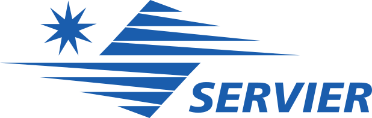

За інформаційної підтримки
Як виникла ідея проекту?
Підвищений тиск (ще називають артеріальна гіпертензія, гіпертонічна хвороба) широко
розповсюджений “мовчазний вбивця”. Уявіть, високий систолічний артеріальний
тиск
(при вимірюванні це перший, тобто більший, показник) є причиною кожних 2х з
кожних 5
смертей в УКРАЇНІ*. Зважте на цю цифру!
В спільну програму з профілактики ускладнень артеріальної гіпертензії за участю
Всеукраїнської асоціації кардіологів України та ДУ «ННЦ Інститут кардіології імені
М.Д. Стражеска» НАМН України активно долучилась компанія Серв’є в рамках
партнерства.
Сьогодні в рамках програми почав свою роботу інтернет-ресурс та був облаштований спеціальний
кабінет в поліклініці інституту.
Віримо, що надання науково обґрунтованої повної та достовірної інформації, що
дозволить знизити ризики серцево-судинних ускладнень
*За даними The World Bank. 2018. МЕДИЧНА ДОПОМОГА ПРИ ГІПЕРТОНІЇ В УКРАЇНІ: ТОЧКИ РОЗРИВУ В
КАСКАДІ
ТА ПОДАЛЬШІ ДІЇ. Washington DC: World Bank)
© Copyright 2020 | Інститут кардіології імені академіка
М.Д.
Стражеска |All Rights Reserved
За інформаційної підтримки Servier